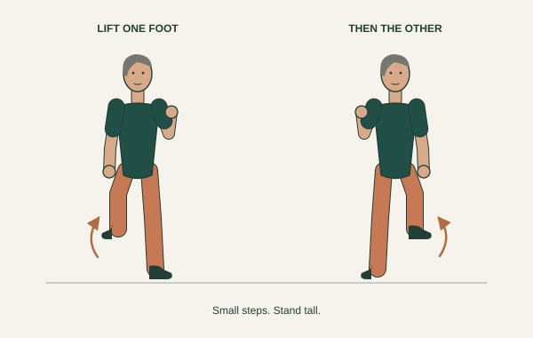

Cardio across your week
Work toward at least 150 minutes of moderate activity, such as brisk walking. You can talk, but not sing. Office marching counts when it reaches that effort; gentle mobility and rest do not.
CDC activity guidance ↗A little space. A little time.
Get stronger, loosen up, and keep moving well as you get older. A practical, illustrated guide you can use right in your office.
Find your routineA sturdy chair. A wall. Room to take a step.

01 / Put a little movement in your day
Choose a starting point.
Pause or rest whenever you need.
Times are flexible. For strength, finish your slow reps, then rest for the rest of the minute. Pause for extra rest. The timer waits for you between movements, so your session may take longer.
02 / Your movement library
Pictures to get you started.
Open any card for the details.
These are gentle starting amounts, not a test. Keep the movements smooth. The drawings are simplified guides; follow the instructions and your comfortable range.
03 / The bigger picture
Build up gradually.
Consistency comes before intensity.
Work toward at least 150 minutes of moderate activity, such as brisk walking. You can talk, but not sing. Office marching counts when it reaches that effort; gentle mobility and rest do not.
CDC activity guidance ↗Train the major muscle groups at least twice a week, with a rest day between working the same muscles. Start with one set, then build toward 2–3 sets of 8–12 controlled reps.
NHS strength guidance ↗Break up long sitting with a short walk or desk reset. Include balance practice regularly, especially as you get older. Keep support close and use comfortable, unforced stretches.
NHS movement guidance ↗When the top end of your reps feels easy for a few sessions, add a little resistance or a second set. Change one thing at a time. The last few reps should feel challenging while your form stays steady; leave about 2 good reps in reserve. Stretching alone won’t build substantial muscle.
A note about your body
Muscles working is expected. Sharp, pinching, or increasing joint pain is a reason to stop or change the movement. Hold stretches gently, without bouncing, and keep breathing.
If an injury, recent surgery, osteoporosis, a heart condition, or balance difficulties affect your movement, ask a clinician or physiotherapist which options suit you. This is a general exercise guide, not a personal treatment plan.
Stop if you feel faint, have chest pain, or get unusually short of breath. Seek urgent medical help for chest pain or severe or persistent symptoms.
The movements and weekly guidance draw on the health resources below. The office routines and starter amounts are a practical adaptation, not a clinical program. Illustrations are original, simplified movement diagrams. Individual cards link to relevant instructions.
Reviewed November 10, 2026.